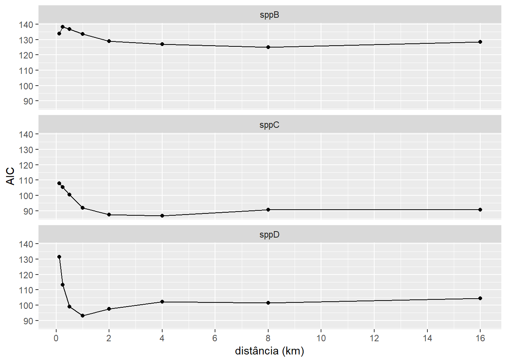

Capítulo 3 Respostas multiescala de espécies
3.1 Apresentação
Este capitulo pretende ilustrar a abordagem geral de identificação de escalas de efeitos nas relações ambientais usando R. Usaremos conteudo baseado no Capítulo 2 do livro Spatial Ecology and Conservation Modeling (Fletcher and Fortin 2018) . Aqui interpretamos a escala em que as espécies podem responder ao habitat, como a cobertura florestal. Para fazer isso, quantificamos a quantidade de floresta que ocorre a várias distâncias dos pontos de amostragem e, em seguida, determinamos a escala em que a cobertura florestal melhor prevê a ocorrência de espécies.
Consideramos como podemos relacionar diferenças de escala (extensão) com a ocorrência de espécies para ajudar a identificar a escala característica (ou escala de efeito) da cobertura florestal na ocorrência de espécies. Este é um problema cada vez mais considerado na ecologia aplicada (Holland et al. 2004; Jackson e Fahrig 2015; McGarigal et al. 2016; Miguet et al. 2016).
Existem várias maneiras de quantificar a escala de efeito. Uma abordagem é usar zonas tampão (daqui adiante “buffers”) de diferentes tamanhos para medir a paisagem circundante aos locais de amostragem. Essa abordagem foi popularizada por Pearson (1993) e é amplamente utilizada por outros pesquisadores (Holland et al. 2004; Jackson e Fahrig 2015).
Um método alternativo emprega uma função de suavização ponderada pela distância - Kernels espaciais. Os kernels podem ser usados para ponderar os dados com base na distância do local de amostreagem. Isso ajuda a capturar melhor os efeitos da vizinhança, ponderando mais os locais próximos do que os distantes. Chandler e Hepinstall-Cymerman (2016) mostraram como os kernels espaciais podem ser usados para selecionar a escala de efeito sem recorrer a binning a priori (como por exemplo, os buffers de 1 km no capítulo “Métricas”).
Neste capitulo, primeiro ilustramos o uso de buffers de diferentes distancias e depois ilustramos o uso de kernels espaciais.
3.2 Pacotes e dados
3.2.1 Pacotes
Carregar pacotes (que deve esta instalado antes):
Caso os pacotes não tenham sido instalados, o R vai avisar atraves um mensagem tipo: Error in library(nomepacote) there is no package called nomepacote. Neste caso, para instalá-los consulte o capitulos aqui Capitulo 4 instalação de pacotes e aqui Capitulo 4 pacotes .
3.3 Buffers
Agora investigamos a escala em que as espécies podem responder ao habitat, como a cobertura florestal. Para fazer isso, quantificamos a quantidade de floresta que ocorre em várias distâncias e, em seguida, determinamos a escala em que a cobertura florestal melhor explica a ocorrência das espécies.
3.3.1 Floresta
Primeiramente, olhamos a proporção de cobertura florestal em diferentes escalas (distâncias de buffer) para todos os pontos. Esses dados ja foram calculados seguindo os passos no capitulo “Métricas”. Para nos auxilia à ter uma visão geral do conjunto de dados e de suas interrelações podemos apresentar como um gráfico pareado. Esse gráfico também é chamado de “pairs plot” ou “correlograma”. A função ggpairs() do pacote GGally permite criar múltiplos gráficos pareados comparando as variáveis contínuas no seu conjunto de dados. Além de demonstrar gráficos de dispersão de cada par de variáveis, ela apresenta gráficos de densidade de cada variável individualmente e, além disso, os valores de correlação entre os pares analisados. Mais detalhes sobre a função ggpairs() no Capítulo 8.
Ao fazê-lo, descobrimos que a percentagem de cobertura florestal em diferentes escalas tende a ser altamente correlacionada. Isto não é surpreendente, dado que os cálculos com um tamanho de buffer maior incluem a área em tamanhos de buffer menores. No entanto, esta correlação tem implicações para a interpretação dos efeitos de escala.
plot correlations
Figura 3.1: Cobertura florestal em torno dos locais de amostragem, calculada em diferentes escalas. São mostrados gráficos de dispersão da porcentagem de cobertura florestal para cada combinação de escalas em pares. Observe o alto grau de correlação entre as escalas similares (125 e 250 metros por exemplo) e escalas maiores (acima de 1 km).
3.3.2 Especies
Para entender como a cobertura florestal afeta a ocorrência de espécies, usamos um modelo de regressão logística. Esse modelo é usado para prever a probabilidade de um evento ocorrer, como a presença de uma espécie. No caso da regressão logística, o evento é a presença de uma espécie (1) ou sua ausência (0). A regressão logística funciona de forma semelhante à regressão linear, mas é adaptada para dados binários. Na regressão linear, o modelo prevê um valor contínuo, como o tamanho do corpo de um animal. Na regressão logística, o modelo prevê a probabilidade de um evento ocorrer, como a presença de uma espécie. O modelo de regressão logística que usamos é simples, e não leva em conta todos os fatores que podem afetar a ocorrência de espécies. No entanto, é útil para ilustrar como efeitos de escala na cobertura florestal pode afetar nossa entendimento sobre a ocorrência de espécies.
Comparamos diferentes modelos com base em medições de cobertura florestal em diferentes escalas - extensões locais (tamanhos de buffer). Para comparar os modelos com tamanhos de buffer diferentes, podemos usar medidas, como medidas de ajuste (verossimilhança), a variação explicada e/ou o sucesso preditivo.
Para comparar o ajuste de modelos diferentes, usamos a log-verossimilhança, que tem um forte base filosófica em estatística. log-verossimilhanças são baseadas no conceito de máxima verossimilhança e quantificam a plausibilidade (ou probabilidade) de um modelo, dados os dados. Ela é baseada no conceito de máxima verossimilhança, que é uma técnica estatística para estimar os parâmetros de um modelo a partir dos dados.
Neste estudo, comparamos modelos que possuem o mesmo número de parâmetros. Isso é importante porque permite que os resultados sejam interpretados com mais confiança. Se os modelos tivessem diferentes números de parâmetros, seria difícil dizer se as diferenças nos resultados eram devido às diferenças nas escalas espaciais ou ao número de parâmetros. Assim sendo, neste caso, o uso de alternativos como critérios de seleção de modelos, como o Critério de Informação de Akaike, que penaliza a log-verossimilhança com base no número de parâmetros (Burnham e Anderson 1998), forneceria resultados idênticos.
Primeiro plotamos os dados.
carnivoros |>
dplyr::filter(buff_dist_km < 4) |>
ggplot(aes(x=value_median, y = sp_pa)) +
geom_jitter(width=5, height=0.05, alpha=0.4) +
geom_hline(yintercept = 0.5, linetype="dashed") +
geom_smooth(method="glm",
method.args = list(family = "binomial"),
se = FALSE) +
facet_grid(sp_name~buff_dist_km) +
scale_y_continuous("presença (probabilidade)",
c(0,1), breaks = c(0,0.2,0.4,0.6,0.8,1.0)) +
labs(x = "área core de floresta (%)") -> fig_spp_near
fig_spp_near## `geom_smooth()` using formula = 'y ~ x'carnivoros |>
ggplot(aes(x=value_median, y = sp_pa)) +
geom_jitter(width=5, height=0.05, alpha=0.4) +
geom_hline(yintercept = 0.5, linetype="dashed") +
geom_smooth(method="glm",
method.args = list(family = "binomial"),
se = FALSE) +
facet_grid(sp_name~buff_dist_km) +
scale_y_continuous("presença (probabilidade)",
c(0,1), breaks = c(0,0.2,0.4,0.6,0.8,1.0)) +
labs(x = "área core de floresta (%)") -> fig_spp
fig_spp## `geom_smooth()` using formula = 'y ~ x'Modelos.
#Run models for three species and 8 buffer distances
carnivoros|>
dplyr::select(sp_name, sp_pa, value_median, buff_dist_km) |>
tidyr::nest(data = -c(sp_name, buff_dist_km)) |>
dplyr::mutate(
fit = map(data, ~ glm(sp_pa ~ value_median,
data = .x, family = "binomial")),
tidied = map(fit, tidy),
glanced = map(fit, glance)
) -> modelos_carnivorosModels resutls.
modelos_carnivoros |>
tidyr::unnest(glanced) |>
dplyr::mutate(dev_exp = (null.deviance - deviance)/null.deviance
) |>
dplyr::select(sp_name, buff_dist_km, logLik, null.deviance, deviance, dev_exp, AIC) |>
left_join(modelos_carnivoros |>
tidyr::unnest(tidied) |>
dplyr::filter(term == "value_median") |>
dplyr::mutate(p.value = round(p.value,4) ) |>
dplyr::select(sp_name, buff_dist_km, term, estimate, p.value)
) |>
dplyr::arrange(sp_name, desc(dev_exp))## Joining with `by = join_by(sp_name, buff_dist_km)`## # A tibble: 24 × 10
## sp_name buff_dist_km logLik null.deviance deviance dev_exp AIC
## <chr> <dbl> <dbl> <dbl> <dbl> <dbl> <dbl>
## 1 sppB 8 -60.5 142. 121. 0.150 125.
## 2 sppB 4 -61.4 142. 123. 0.137 127.
## 3 sppB 16 -62.2 142. 124. 0.127 128.
## 4 sppB 2 -62.4 142. 125. 0.123 129.
## 5 sppB 1 -64.8 142. 130. 0.0892 134.
## 6 sppB 0.125 -64.9 142. 130. 0.0886 134.
## 7 sppB 0.5 -66.4 142. 133. 0.0671 137.
## 8 sppB 0.25 -67.1 142. 134. 0.0568 138.
## 9 sppC 4 -41.4 113. 82.8 0.270 86.8
## 10 sppC 2 -41.7 113. 83.3 0.265 87.3
## # ℹ 14 more rows
## # ℹ 3 more variables: term <chr>, estimate <dbl>, p.value <dbl>Plot model results.
modelos_carnivoros |>
tidyr::unnest(glanced) |>
dplyr::mutate(dev_exp = (null.deviance - deviance)/null.deviance
) |>
dplyr::select(sp_name, buff_dist_km, logLik, null.deviance, deviance, dev_exp, AIC) |>
left_join(modelos_carnivoros |>
tidyr::unnest(tidied) |>
dplyr::filter(term == "value_median") |>
dplyr::mutate(p.value = round(p.value,4) ) |>
dplyr::select(sp_name, buff_dist_km, term, estimate, p.value)
) -> model_summary## Joining with `by = join_by(sp_name, buff_dist_km)`model_summary |>
ggplot(aes(x=buff_dist_km, y = AIC)) +
geom_point() +
geom_line() +
scale_x_continuous(breaks = c(0,2,4,6,8,10, 12,14,16)) +
facet_wrap(~sp_name, nrow = 3) +
labs(x = "distância (km)") -> fig_scale_effect_AIC
fig_scale_effect_AIC
model_summary |>
ggplot(aes(x=buff_dist_km, y = logLik)) +
geom_point() +
geom_line() +
scale_x_continuous(breaks = c(0,2,4,6,8,10, 12,14,16)) +
facet_wrap(~sp_name, nrow = 3) +
labs(x = "distância (km)",
y = "log-verossimilhança") -> fig_scale_effect_loglik
fig_scale_effect_loglikmodel_summary |>
ggplot(aes(x=buff_dist_km, y = dev_exp)) +
geom_point() +
geom_line() +
scale_x_continuous(breaks = c(0,2,4,6,8,10, 12,14,16)) +
facet_wrap(~sp_name, nrow = 3) +
labs(x = "distância (km)",
y = "variação explicada") -> fig_scale_effect_dev
fig_scale_effect_devPara identificar a escala do efeito da cobertura florestal na ocorrência de carnivoros, plotamos as probabilidades logarítmicas de diferentes modelos de regressão logística ajustados aos dados em função da cobertura florestal calculada em diferentes escalas, variando de 0.125 m a 16 km. Esperaríamos que a escala que melhor se ajustasse aos dados fosse a que melhor explicasse a variação na ocorrência. Nesse caso, descobrimos que a cobertura florestal dentro de 2 km é a que melhor se ajusta aos dados. No entanto, quando plotamos os parâmetros β dos modelos em diferentes escalas, descobrimos que as relações são idênticas quando a cobertura florestal é medida em 2 km ou em tamanhos de buffer maiores. Apenas em escalas menores (125 a 500 m) vemos uma fraca relação com a cobertura florestal. Essa incerteza quanto à escala do efeito é provavelmente uma consequência da cobertura florestal estar altamente correlacionada entre escalas, como vimos anteriormente. No entanto, há evidências consistentes de que a ocorrência de carnivoros mudar com a cobertura florestal na paisagem, independentemente da escala.
3.3.2.1 Pergunta 7
Vimos como a incerteza quanto à escala do efeito é provavelmente, pelo menos em parte, uma consequência da correlação entre escalas. Também é possível que, além da cobertura florestal, existam outros fatores que afetem a ocorrência das espécies na paisagem estudada. Usando como base o conteudo das aulas, leitura disponivel no Google Classroom (Base teórica 4 Dados, métricas, analises), e/ou exemplos apresentados aqui no tutorial, apresentam algumas hipóteses alternativas que poderiam explicar a incerteza nos modelos. Forneça recomendações para variáveis adicionais que poderiam ser incluídas nos modelos para testar suas hipóteses. Justifique sua seleção de forma clara e concisa, apoie sua escolha com exemplos da literatura científica.
Essa foi a última pergunta. O que se segue é um exemplo que mostra uma abordagem alternativa.
3.4 Kernels
Nesta seção usaremos funções no pacote siland para executar uma análise de escala de efeito usando Kernels espaciais.
![Esquema ilustrativo demonstrando diferentes tipos de kernels espaciais: (A) diagrama representando a estrutura geral de um filtro espacial baseado em kernel; (B) os cinco tipos mais comuns de distribuições espaciais de kernel; (C) núcleos espaciais de largura de banda de distância fixa (estática); e (D) núcleos espaciais de distância adaptativa. Observe que a figura é baseada nas seguintes fontes: Figura 3.4 na página 86 de Bailey e Gatrell (1995); Fotheringham et al. (2002) Figuras 2.11 e 2.13 nas páginas 45 e 47 respectivamente; Figura 3.2 na página 37 de Wang (2006); páginas 67-68 de Smith e Bruce (2008); e Figura 4-47 na página 177 de de Smith et al. (2009).](figures/spatialkernels.png)
Figura 3.2: Esquema ilustrativo demonstrando diferentes tipos de kernels espaciais: (A) diagrama representando a estrutura geral de um filtro espacial baseado em kernel; (B) os cinco tipos mais comuns de distribuições espaciais de kernel; (C) núcleos espaciais de largura de banda de distância fixa (estática); e (D) núcleos espaciais de distância adaptativa. Observe que a figura é baseada nas seguintes fontes: Figura 3.4 na página 86 de Bailey e Gatrell (1995); Fotheringham et al. (2002) Figuras 2.11 e 2.13 nas páginas 45 e 47 respectivamente; Figura 3.2 na página 37 de Wang (2006); páginas 67-68 de Smith e Bruce (2008); e Figura 4-47 na página 177 de de Smith et al. (2009).
A abordagem de Kernels fornece uma maneira rigorosa de estimar as escalas nas quais as variáveis da paisagem afetam respostas ecologicas, e pode ser incorporado na maioria das classes de modelos estatísticos (Chandler and Hepinstall-Cymerman (2016)). Esta abordagem pode reduzir o viés do modelo e levar a interpretações mais precisas das relações espécie-paisagem (Aue et al. 2012; Chandler and Hepinstall-Cymerman 2016; Miguet, Fahrig, and Lavigne 2017). A função de suavização Kernel assume que o efeito de uma variável da paisagem é mais forte perto do local focal e decai em função da distância. Assim fornecendo uma representação mais realista de muitos processos ecológicos como por exemplo, dispersão de sementes (Bullock et al. 2017) e movimentos de forrageadoras de lugar central (Orians e Pearson 1979).